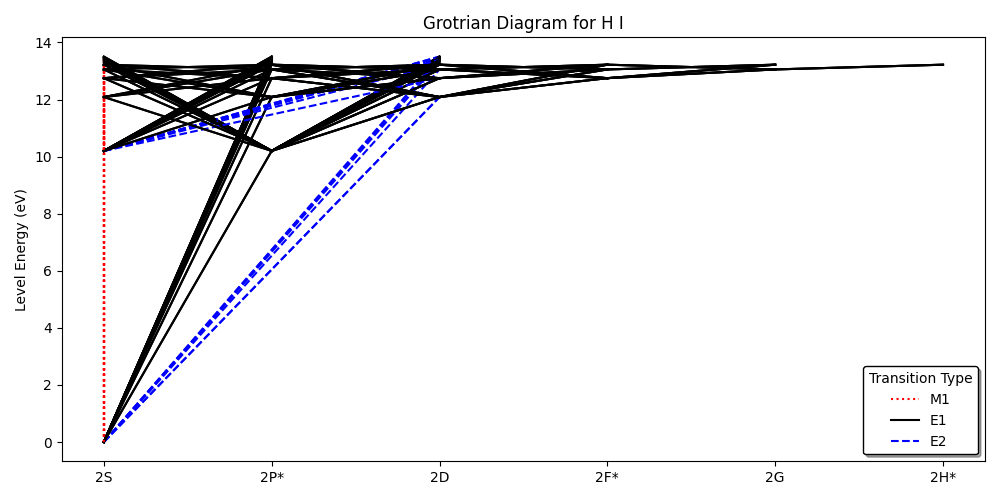

ASDtools
Have you ever wanted to load data from NIST's Atomic Spectra Database (ASD) into Python? Are there specific atomic and molecular processes you want to understand better? Do you want to check the information listed on standardized databases? ASDtools is a Python package that aims to help users with all these tasks! The primary functionality of ASDtools comes from its ability to format and clean data produced by astroquery.nist. The default output of astroquery contains a handful of non-numeric characters that describe individual lines in the NIST ASD. ASDtools can identify these flags and automatically relocate them to a separate column in the resulting DataFrame. This allows users to keep track of flags without manually formatting every queried DataFrame. In addition to ASDtools' data cleaning capabilities, it also has a handful of tools aimed at helping users understand formatting choices/conventions in the NIST ASD. For example, it can (1) generate the ground-state electronic configuration for all elements, (2) produce Aufbau diagrams up to a specified level, (3) calculate all possible term symbols given an electronic configuration, and (4) create a Grotrian diagram for a given element.
BlenderBraille
Although many people are considered blind or low vision (BLV), creating accurate Braille signage can be costly. This issue often leads to poor maintenance of Braille signage as it gradually breaks or wears down. Some individuals have tried to address this problem by 3D printing their own Braille signage, but often without considering Braille's proper grammatical structure or sizing. So, I developed a Blender add-on that automates accurate and size-compliant Braille generation. I also created an automated tool for generating tactile models to assist with my STEM outreach!

Fourier Transform Demo
Most modern technologies use Fast Fourier Transforms (FFTs) in some way. Streaming platforms (i.e., Spotify, YouTube, etc.) use it to compress media files, scientists use it to identify periodic signals in data (i.e., time-series radio astronomy), and even musicians use it to master their recordings (i.e., hissing, balancing, etc.). I wanted to learn more about FFTs and their applications, so I made a Jupyter notebook that provides visual and auditory examples of their work. Below is one example where I decomposed a song into its frequency-space components and slowly added in each frequency until the original song was recreated. See if you can guess the song before it finishes!
WARNING: This audio can be a little loud on some devices.
N-Body Simulation
When I started learning Python, a friend and I would work on themed projects to practice our coding skills. One of these themes was just "space," so I tried to create my orbital simulation from scratch! My methodology was sketchy, and the code was horribly unoptimized. But this is one of the first coding projects I ever tackled, and it is still fun to mess around with. This code is also capable of querying the NASA Exoplanet Archive and simulating a user-specified extrasolar system!

Slightly Professional
In undergrad, a friend of mine (Alex Giovannone) and I decided to try making YouTube videos to discuss topics we find difficult and interesting. We jointly run the channel and will infrequently upload videos, although grad school has made this harder to do consistently. We both animate the videos ourselves, and spend weeks to several months writing scripts! These videos are far from perfect, but it is a fun way to combine my interests in animation, music composition, and script writing. Below is my most recent video on the channel!